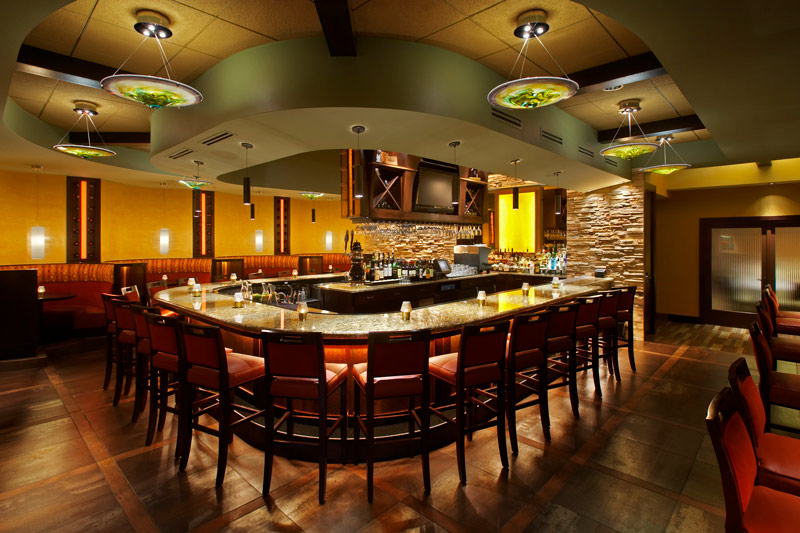

BIENVENUE À STAKE BRAZIL
Chez Stake Brazil, vous ferrez une expérience culinaire des plus sophistiquées. Notre décoration élégante, nos plats raffinés et notre service irréprochable feront de votre soirée un moment distingué.
Salle à manger principale
Parfait pour les couples et les groupes, c'est un endroit par excellence pour passer une soirée intime et agréable. Avec la salle meublée délicate, vous ne manquerez de rien durant votre visite gastronomique.
Salle privé
Offrez à vos convives des expériences nobles pour vos réunions d'affaires ou pour le plaisir. Vos invités ne pourront résister à son charme et à son exclusivité.
Cave à vin
Nous sommes fiers de notre cave à vins impressionnant. Choisissez parmi plus d'une centaine de bouteilles provenant de partout à travers le monde.
Salon de cigare
Appart des plats gastronomique, la maison F & M vous offre une ultime expérience de cigare aussi. Entre amis, collègues ou même seul, votre plaisir est dans notre mythique salon de cigares.
Terrasse
En été, Nous ne pourrions pas être plus flattés! Notre terrasse vous offre un refuge extérieur couvert pour déguster votre repas dans une ambiance sublime.
Bar
Commencez une conversation aventureuse avec les inconnus sympathiques parmi notre vaste sélection de martinis, de vins, de whiskys pure malt et de vodkas de choix.
